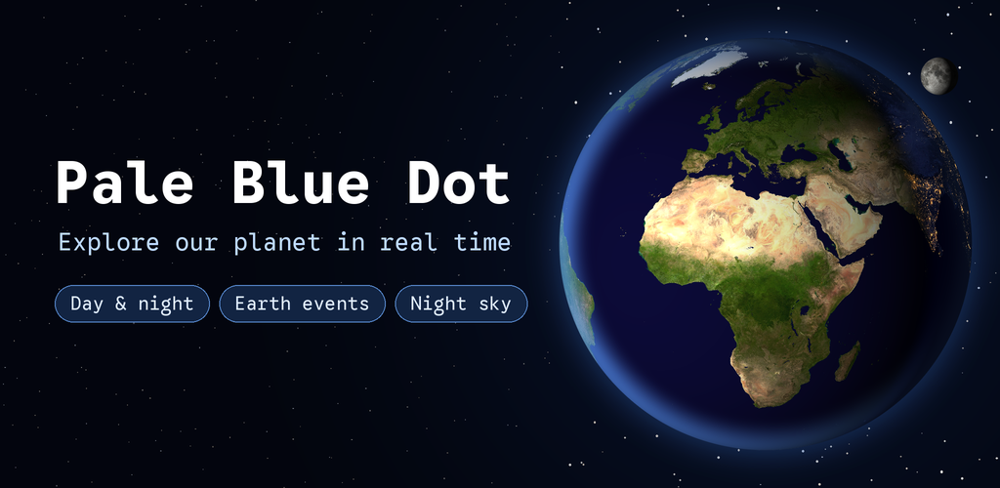
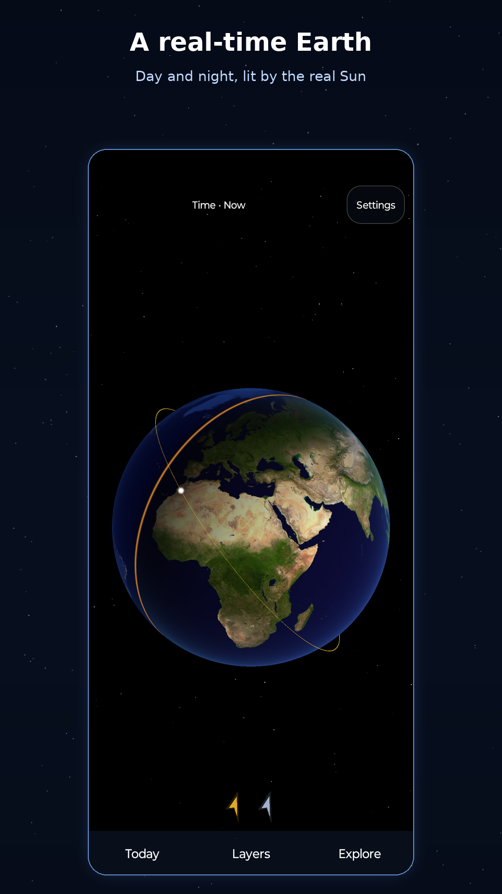
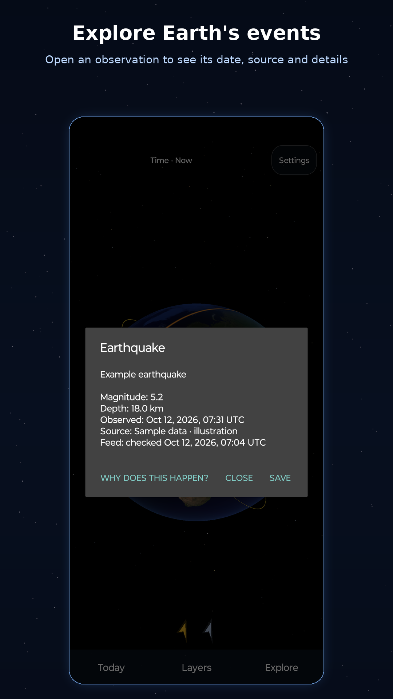
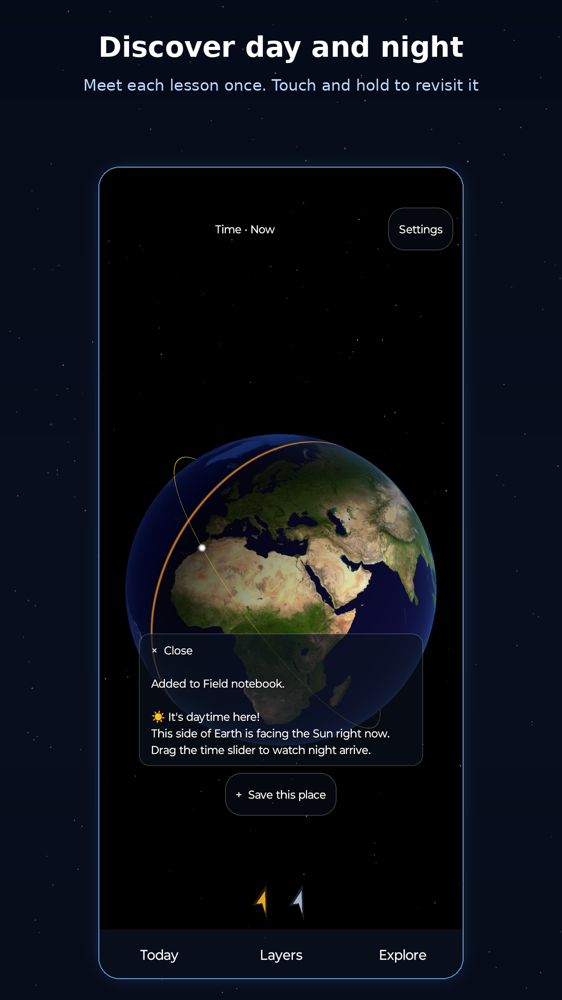
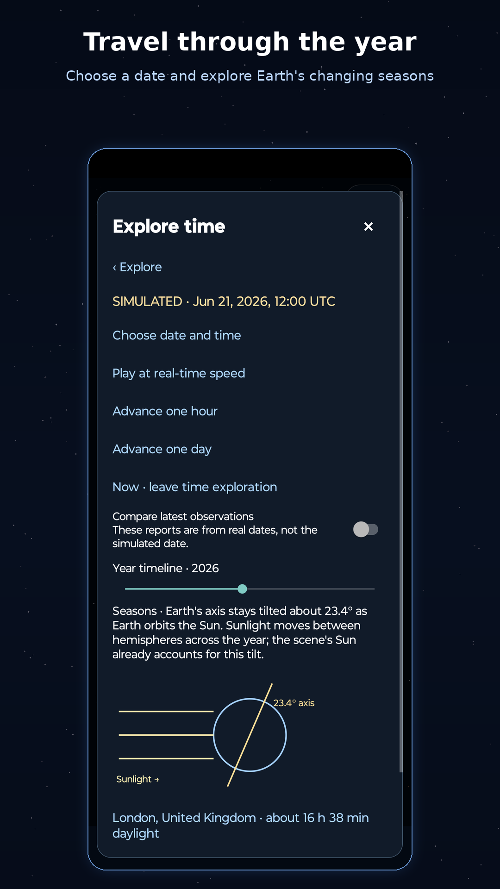
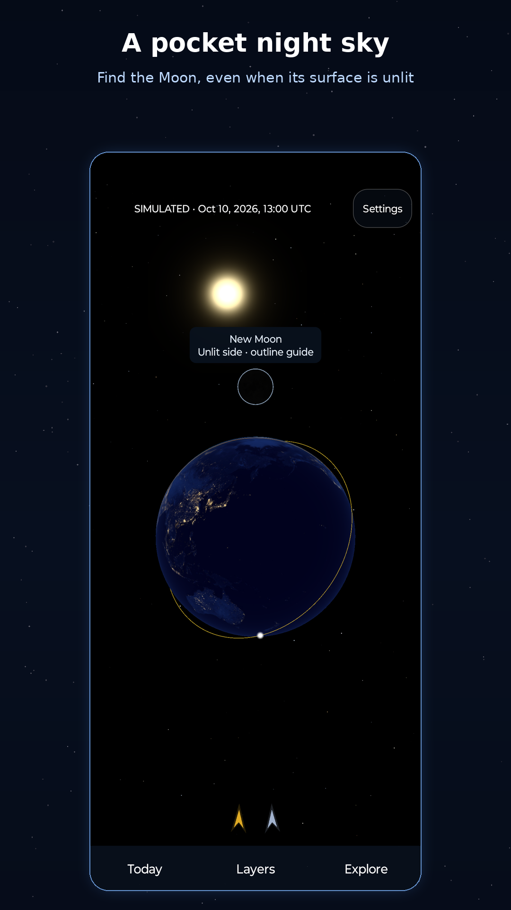
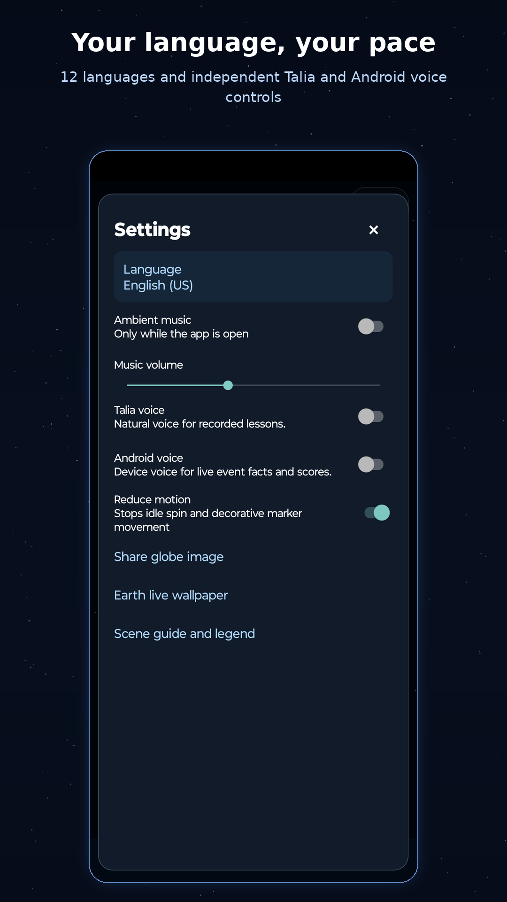
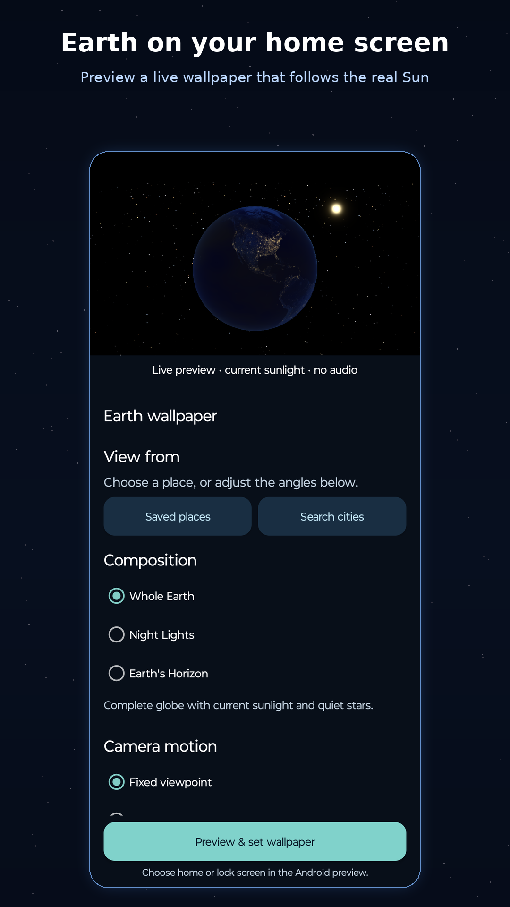
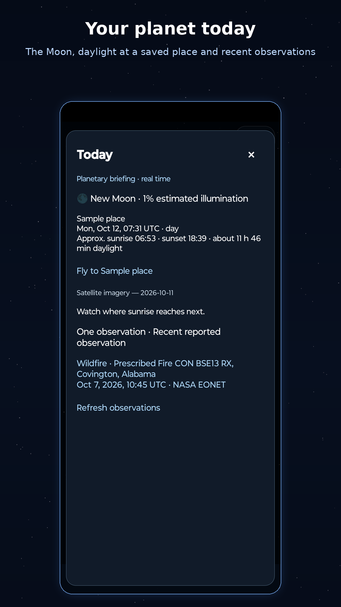

놀이와 탐험
Gravity Garden
차분한 물리 퍼즐 게임에서 중력을 바꾸며 정원을 가꿔보세요.
주머니 속 작은 행성. 지구를 돌리고 우주를 탐험하며 새로운 발견을 모아 보세요.

Pale Blue Dot는 호기심이 많은 9~12세 어린이와 어른들을 위한 대화형 3D 지구 및 천문학 앱입니다. 지구를 돌리고, 낮과 밤의 경계를 따라가고, 최근 지구 사건을 탭하여 우리의 작은 행성에서 무슨 일이 일어나고 있는지 알아보세요.
탐험은 작은 발견의 모음이 됩니다. 가이드 여정을 떠나고, 필드 노트를 쓰고, 찾기 도전에 나서거나, Today를 열어 달의 위상과 지구에서 일어나는 일을 확인해 보세요. 이제 지구를 위젯과 라이브 배경화면으로 홈 화면에도 둘 수 있습니다.
스크린샷은 샘플 데이터를 사용합니다.








버전 3.11은 다음 추가 사항과 함께 GitHub에서 서명된 APK로 제공됩니다. Google Play는 자체 출시 일정을 따릅니다.
지구본은 공개 관측 자료와 단순화된 시뮬레이션을 결합합니다. USGS는 지난 7일 동안 발생한 규모 4.5 이상의 지진 자료를 제공합니다. NASA EONET에서는 아직 종료되지 않은 화산 사건, 지난 10일간의 산불, 지난 7일간의 강한 폭풍 자료를 가져옵니다.
구름을 끄거나, 생성된 구름을 선택하거나, 전날 NASA VIIRS SNPP 이미지에서 얻은 위성 구름을 볼 수 있습니다. 최신 구름과 사건 데이터는 기기에 저장되므로 오프라인에서도 지구본에 보여 줄 내용이 있고, 새로 고침에 실패하면 오래된 데이터라는 표시가 남습니다.
판 경계는 PB2002 모델의 간소화 버전에서, 도시 목록은 GeoNames에서 가져왔습니다. 둘 다 앱에 포함되어 있어 연결 없이도 작동합니다.
태양과 달에는 단순화된 천문 계산을 사용합니다. ISS는 설명을 위한 모형 궤도를 따르며 실시간 위치 자료를 사용하지 않습니다. 일식·월식 알림은 대략적인 정렬을 나타내며 정확한 예측이나 특정 지역에서의 관측 가능성을 알려 주지는 않습니다. 시간 슬라이더는 시뮬레이션만 바꾸며 과거 또는 예보의 구름이나 지구 사건 자료를 불러오지 않습니다.
계정, 광고, 분석, 추적 SDK가 없습니다. 앱은 공개 NASA 및 USGS 데이터를 위한 인터넷 액세스만 요청하며, 위치 권한이나 GPS 액세스는 요청하지 않습니다. 설정, 저장한 장소, 노트 기록, 진행 상황은 기기에 남습니다. 공유 이미지는 기기에서 만들어지며 어디로 보낼지는 직접 선택합니다.
Android 휴대폰, 태블릿, 폴더블용으로 제작되었으며 화면 회전을 지원합니다. Android 7.0 이상 및 OpenGL ES 3.0이 필요합니다. 지구본은 게임 엔진 없이 기본 Android 컨트롤을 사용하여 Kotlin으로 제작되었습니다.
Google Play 또는 GitHub에서 서명된 APK를 선택합니다. APK 릴리스에는 설치 지침, 체크섬, 서명 세부정보가 포함되어 있습니다. Android 7.0 이상 및 OpenGL ES 3.0이 필요합니다.
Google Play에서 다운로드 APK 다운로드